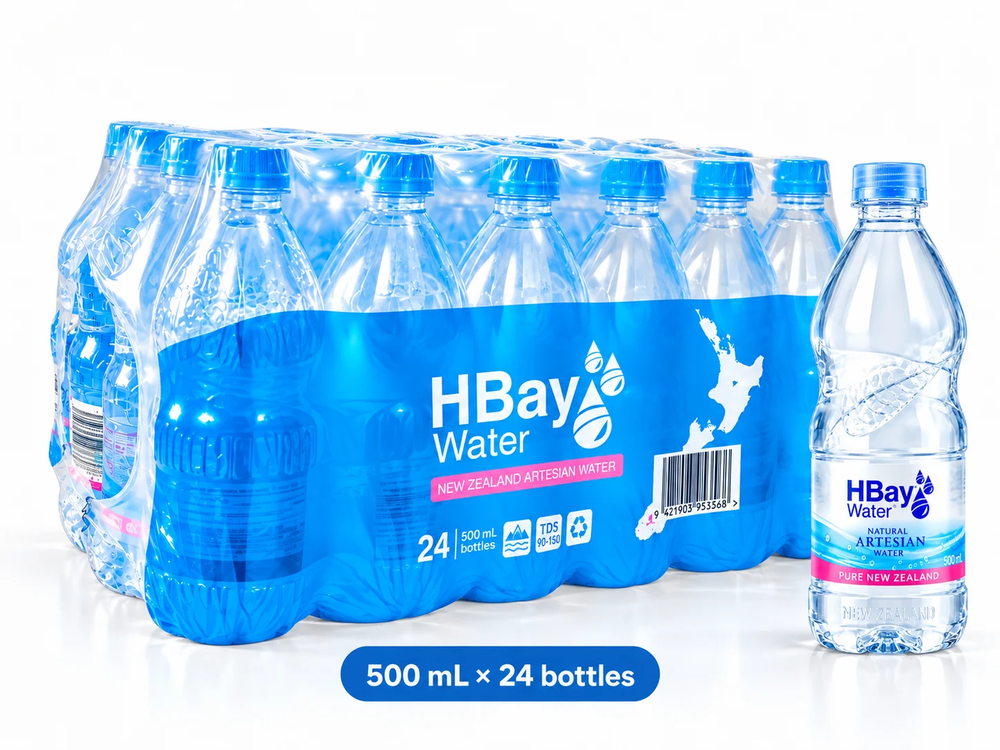
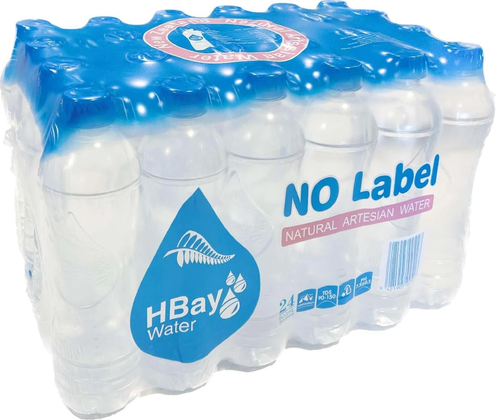
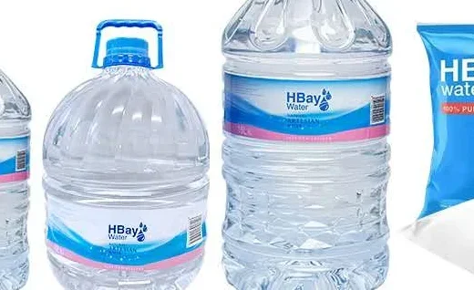
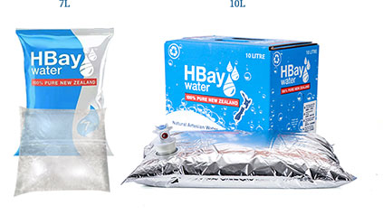

One water.
Every size.
HBay Natural Artesian Water comes in bottles for the day, larger containers for the house, and bag-in-box for time away. Everything below is taken from HBay’s current product information; ask at your local store which sizes it carries.

Bottled water
HBay Natural Artesian Water in PET bottles, from a small bottle for the school bag to 1.5 litres for the table.
- Sizes
- 330 mL · 500 mL · 600 mL · 1.5 L
- Bottle
- PET
- Pack
- Film-wrapped, 24 bottles per pack
- Shelf life
- 24 months
- Good for
- Daily use at home, school hydration, events and meetings. The 1.5 L suits sport and household hydration.

The no-label pack
The brand sits in the bottle itself: embossed details replace the paper label. The 24 × 600 mL pack is listed at PAK’nSAVE.
- Size
- 600 mL
- Pack
- 24 bottles per pack
Retail availability varies by store. Follow the pack and your local council’s guidance for disposal.

Larger containers
Single containers for the office, the bach, the boat or the campsite.
- Sizes
- 6 L · 10 L · 16 L
- Container
- PET
- Pack
- Sold as a single container, no outer packaging
- Shelf life
- 24 months
- Good for
- Holidays, camping, office drinking water, small households and outdoor activities.

Bag-in-box
A foil bag in a carton: easy to carry, easy to pour, and it keeps for longer.
- Size
- 10 L
- Inner
- Aluminium foil bag
- Outer
- Cardboard box
- Shelf life
- 36 months
- Good for
- Holidays and outdoor camping.
A 7 L bag also appears in the HBay range; its specification is to be confirmed with the client.
Ready to find a bottle?
Product details from HBay’s current website (nzmiracle.com). Sizes and availability vary by store and market.